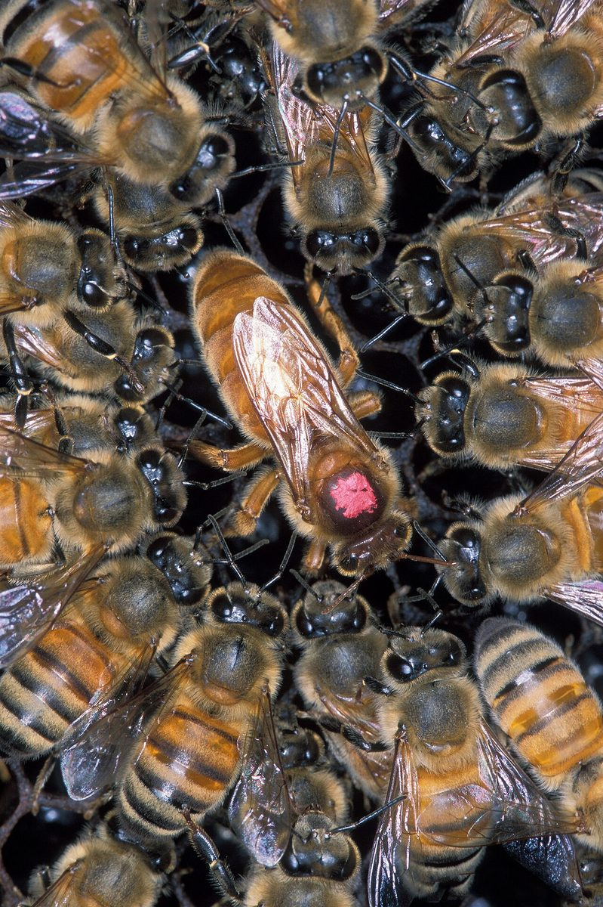

Honey starts as plain flower nectar and ends as golden, sealed-up sweetness. Between the two there is a whole factory line of bees, stomachs, and wing-fanning. Here is the journey from flower to hive.
Honey is one of the oldest sweets humans have ever eaten, and the whole thing is made by tiny workers who never stop. But here is the surprising part: a spoonful of honey starts out as something that is mostly water. Here is the step-by-step trip from flower to hive.
1. A bee visits a flower and takes a sip
It all starts with nectar — a sweet, watery liquid that flowers make to attract pollinators. A forager bee lands on a flower, sticks in her long straw-like tongue (called a proboscis), and sucks the nectar straight into a special storage pouch called the honey stomach.
This is not a regular stomach for digesting food. It is a little carrying tank, made just for nectar. That matters, because the bee will carry it all the way home.
2. The ride home does some of the work
A single bee can visit up to a hundred flowers on one trip, sipping a little from each. As she flies, her body is already busy: special enzymes mix into the nectar and begin breaking its big, complicated sugars into smaller, simpler ones. That is the first real step of making honey — and it happens while the bee is still in the air.

3. A check at the front door
Back at the hive, the forager bee is not done yet. Guard bees sniff her at the entrance. They recognize her by the hive's scent, and once she passes, she heads inside to find house bees.
Then comes the famous bee handoff: the forager opens her mouth and offers up a drop of nectar to a house bee. If it tastes right, that house bee takes it in — and may pass it along to another bee, then another. Each time it changes mouth, fresh enzymes get added. It is a real factory line, and every bee is a worker on it.
4. The drying room (wing-fanning included)
Nectar straight from a flower is about 80 percent water — way too watery to store. So the hive bees turn the hive into a drying room. They pass the nectar back and forth, spread it into thin films on their mouthparts, and flap their wings furiously to blow air over it. All that fanning evaporates the water, drop by drop. This is the slow part, and it takes a lot of bees.
5. Honey, ready for the pantry
When the water has dropped to about 18 percent, it finally counts as honey — thick, golden, and almost impossible for germs to spoil. The bees tuck the finished honey into the little six-sided cells of the honeycomb and, once a cell is full, they cap it with a thin layer of beeswax to keep it sealed. Like a pantry jar with a lid on.
6. Why all that work?
Bees do this because they need winter food. When cold weather ends the flowers, nectar disappears — so the hive survives on the honey they made and sealed away during the sunny months. And humans just happen to love the taste of their pantry.
To think: one single jar of honey might mean millions of flower visits and thousands of bees working shifts. Next time you taste honey on toast, you are eating teamwork that took the whole season to build.
Sources: Chicago Botanic Garden — Drop by Drop: How Honey Happens · Discover Wildlife — How do bees make honey?